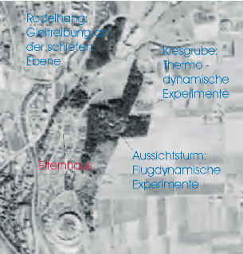
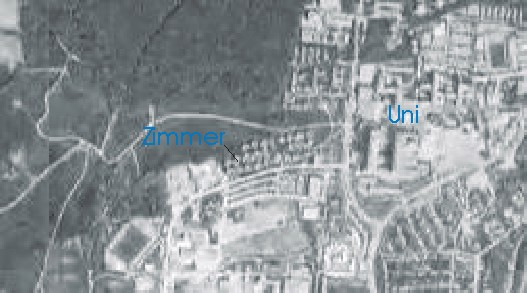

Harald Schellinger
Ich wurde 1975 in Villingen geboren. Auf dem Satelitenbild sieht man die Gegend, in der ich meine ersten physikalischen Experimente gemacht habe.

Teil von Villingen von oben
Da ich nach der Schule nicht wußte, ob ich nun Maschinenbau oder Mathematik studieren sollte, war technische Kybernetik ein guter Kompromis. Außerdem hat mir im Leistungskurs Technik Steuerungstechnik (Pneumatik) und Digitaltechnik sehr gut gefallen. Doch bei dem Studium erlebte ich einge Überraschungen:
Es gibt abgefahrene Mathematik und sehr abgefahrene Mathematik
Man macht sehr wenig Steuerungstechnik und dafür viel Regelungstechnik. Das konnte ich durch mein Anwendungsfach und Wahlfächer ausgleichen.
Man baut nicht intelligente Roboter, wie man sie im Fernsehen (s. Bild unten) sieht, sondern befaßt sich mit Rührkesselreaktoren, Regler von Klospülungen usw.
Terminator als Neuauflage der Frankenstein Gruselgeschichte (die Mensch-Maschine)
Neben dem Studium ist das Leben im Allmandring mit seinen Hausfesten, Wohnheimskneipen usw. recht angenehm. Doch mein Aktionsradius war recht klein (ca. 1 km).

Mein Lebensraum